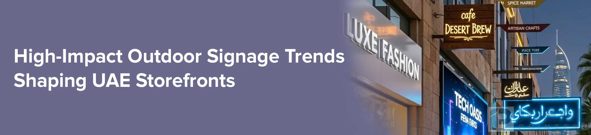

The High-Impact Outdoor Signage Trends Making Pakistan Storefronts Impossible to Ignore

Imagine you're driving down Sheik Zayed Road in the dusk and your business is catching everyone's attention like a sparkling Burj Khalifa. Standout signage can make your business stand out. In a city like Lahore, where the skyscrapers scream "innovation" while the souks scream "heritage", your signage is more than just a label. It's also your first handshake to the world. Ideal Printers has helped countless local business owners transform their businesses from being wallflowers into showstoppers. Outdoor signs can help you increase your visibility.
In Lahore's busy market, signage is more important than ever.
Lahore's business scene is like a blur of events, with a mix of Expo vibes and everyday hustle. Over 90% of consumers are influenced by visual clues before entering a store (yes, this statistic keeps marketers awake at night). Investing in high-quality signage is not optional. It's your secret weapons. Outdoor Signage grabs the attention of passersby, while illuminated gems such as Backlit signage and outline 3D signage make you memorable, even at night.
Here's the human aspect: we've talked to shop owners who have doubled their inquiries by simply swapping out a flat sign for one with depth and glow. It's more about being seen in the city that never sleeps than it is about being flashy. Our team in Lahore understands the city because they live it. Signage that is resistant to desert dust and compliant with local regulations, while being tailored to your story, is what we do. We've created 3D signs for DMCC free zone markets and the old-school Ichra market.
Unpacking outdoor signage: Your brand's Resilient frontline
Outdoor Signage is an unsung hero in Lahore for businesses that are fighting heat, sand, and the sheer volume of traffic. It is built to last while shouting your message (figuratively, of course) from the rooftops.
The Benefits of Outdoor Signage
- Durability first: Made from materials such as aluminum and stainless steel, our signage for outdoor use can withstand Pakistan's UV radiation and downpours.
- Massive reach: Ideal for high-traffic areas like Model Town and Ichra - think storefronts that turn commuters into customers.
- Versatile vibes: From elegant nameplates to bold banners, this adapts to the style of your boutique or fitness studio.
- Cost-Effective Longevity: One-time investment, years impact - no fading, peeling.
Ideal Printers specializes in outdoor signs that blend seamlessly with Lahore's skyline. Imagine a sleek panel of aluminum etched with your company logo. It's professional, eye-catching, and easy to install across the Emirates. It's a great way to boost street appeal for businesses without spending a fortune. Even high-risk areas such as Downtown Lahore can benefit from anti-graffiti paint.
3D Signage Has Depth: It's the Wow Factor that Draws Crowds
Have you ever walked by a flat sign and thought, "Meh?" 3D Signage is like giving your brand an oversized high-five. This is not your grandmother's vinyl stickers; it's layered and textured magic that pops out of the surface.
Why choose 3D signage for your Lahore venture?
- Instant impact: The depth of the logos and texts makes them jump out. Ideal for busy malls such as the Lahore Mall.
- Material magic: There are many options--acrylic to give a glossy sheen, wood to add warmth and elegance, or stainless steel for an industrial edge.
- Indoor/Outdoor Flex: It's equally at home in a boardroom or on a beachfront walk.
- Brand personality Boost: Custom fonts and finishes tell your story 3D.
Backlit Signage: Glow up Your Brand at Night
Lahore's nightlife is not dimmed down; it's amplified. Enter, backlit signage - your ticket to 24/7 radiance. LEDs hidden behind acrylic letters produce a soft halo glow, which is energy-efficient.
Backlit Signage Features:
- All Day Visibility: Bright enough to be seen in the noon sun and mesmerizing when lit up by city lights. Perfect for hotspots for nightlife in Barsha or Marina.
- Custom glow: Add your brand colors, add frosting to diffuse the light, or go full blast.
- Eco Smart: Low-power LEDs mean lower bills in line with Lahore's eco initiatives.
Combining it with 3D elements will give you Backlit signage, which is pure poetry. Ideal Printers's client, a trendy restaurant in Downtown, saw a 30% increase in reservations after the installation. When drivers see your glowing sign from a distance, they think, "I have to go check it out."
Outline 3D Signage - External Illumination to Enhance Edge-of-Night Drama
Outline signage, also known as an Outlit 3D signage, uses external spotlights that trace the edges of your design, creating a dramatic shadow figure in Lahore's evening sky. This is a minimal version of backlit signs, but it still packs a powerful architectural punch.
What makes Outline 3D Signage Lahore's Darling?
- Sleek sophistication: External lighting highlights contours without overwhelming - think glow-trace outline on stainless steel logos.
- Versatile Light: Adjustable Beams for Day-to-Night Transitions. Suitable for everything from retail strips to corporate towers.
- Low Maintenance Magic: Fewer components mean easier maintenance in our dusty climate.
- Artistic shadow play: Creates dynamic results as the sun sets.
Ideal Printers is a leader in this area, combining outline signage and outdoor signs' durability. Imagine the name of your clinic etched into acrylic and edged with soft, LEDs. Patients will feel welcome, but not blinded. This is a popular choice for luxury brands that want to make a subtle statement. Less light is more attractive. We have RGB options to switch colors for the season. Think pink for Breast Cancer Awareness, or green for Pakistan National Day.
Ideal Printers brings it all to life in Lahore
Ideal Printers is more than just a printer. We're also your signage partner. We handle everything from the initial design in our Model Town Studio to the final installation anywhere in Lahore or Lahore. We handle everything. What is our process? Simple:
- Craft With Care: We use premium materials to minimize waste while maximizing wow.
- Install like Pros: Licensed Installation crew and safety first. Done before you have your morning coffee.
- Aftercare that Cares: Maintenance check is free after six months. Your glow should not fade.
We are proud to operate 100% in Lahore, and have a warehouse that is stocked with products for turnarounds within a week. No middlemen, no delays--just results.
Wrapping it Up: Your Lahore brand deserves to shine
You've got it, Lahore hustler. outdoor signs; 3D signs; backlit signs and outline signage 3D. These aren't simply upgrades; they're the mic-drop moments for your brand in a city where there's never a pause. These solutions have been tested in Pakistan's chaos, and are designed to make your story stand out.
Ideal Printers has seen shy startups become local legends one glowing letter at a time. We don't do cookie-cutter, but we can create custom magic with zero headaches and installation faster than a Lahore drone. We have you covered, whether you want 3D signs to jump off the wall or backlit signs for the night. Or outline signage 3D signs, with that sleek halo bend.
Are you ready to stop blending into the crowd and start blowing people's minds? Let's get Lahore talking about you.
Reach Out to Our Team Today
Want to start your printing journey in Lahore?
- Visit us at: Industrial Area 2, Model Town, Lahore, Pakistan
- Call: +92 42 3597 9285
- Email: idealprinter41@gmail.com